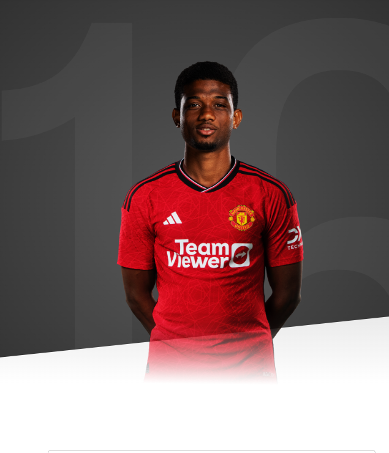

“I'm over the moon to be here. It's a dream come true for me."

AGE
21
APPEARANCES
9
CLEAN SHEETS
1
BIOGRAPHY
Born in Abidjan, the biggest city in the Ivory Coast, Amad, as he prefers to be known, is one of the most talented young wingers on the European scene.
The winger moved with his family to Italy as a boy and, after settling in the Emilia-Romagna region, started his football life with local amateur club Boca Barco.
He quickly attracted the attention of a host of Serie A clubs, and eventually joined Atalanta in 2015.
Soon, he was moved up to more play with more senior age groups and, by 16, he was already training with La Dea's first team
TThere are defenders in the first team that sometimes cannot stop him,” said Atalanta captain Papu Gomez. “To stop him in training, we have to kick him! He plays like Messi
Amad can operate from either flank, or in the no.10 role, but is most accustomed to starting on the right wing, where he can cut in onto his favoured left foot.
In 2019, he made his professional debut for Atalanta in a 7-1 win over Udinese, scoring their final goal, at the age of just 17 years and 109 days. That made him the first player born in 2002 to score in Serie A, and the youngest player ever to score on his Italian top-flight debut.
Despite his diminutive size, his strength on the ball stands out, as does his low centre of gravity, dribbling ability and eye for the right pass.
He went on to play a couple more games in the 2019/20 season following his debut, and was part of the Atalanta squad that travelled to Lisbon for their post-lockdown Champions League quarter-final with Paris Saint-Germain.
On 5 October 2020, an agreement was announced between the Bergamo club and Manchester United for the transfer of the player, subject to a medical, work permit and personal terms.
Amad played twice more for Atalanta ahead of his proposed move to England, coming on as a substitute against Hellas Verona and FC Midtjylland, before the transfer was completed in January 2021.
With the move confirmed, Ole Gunnar Solskjaer declared himself delighted to have acquired Amad:
As a club, we have followed Amad for a number of years and, having watched him myself, I believe he is one of the most exciting young prospects in the game.
Manchester United has such a proud history of developing young players and everything is in place to enable Amad to reach his potential here.
It will take time for him to adapt but his speed, vision and fantastic dribbling ability will stand him in good stead to make the transition. He is a player with all of the raw attributes that are needed to be an important player for Manchester United in the years to come.
After impressing in a couple of Under-23s appearances, he made his first-team debut against Real Sociedad in the Europa League round of 32 and scored his maiden goal for the club versus AC Milan at the next stage of the competition.
Amad spent the second half of the 2021/22 season on loan with Rangers, and scored less than five minutes into his debut for the Glasgow club, against Ross County. Amad made 13 appearances during his loan spell in Scotland, scoring three times.
He joined EFL Championship club Sunderland on loan for the following campaign, on 31 August 2022, and made a stunning impact for the Black Cats as they finished sixth and reached the Championship play-offs.
The Ivorian scored 14 goals in 42 games for the Wearsiders, including a stunning free-kick against Luton in the play-off semi-final, and he was named the club's Young Player of the Year at the end of the season.